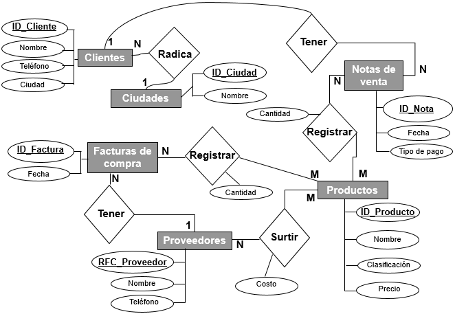
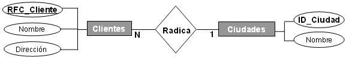
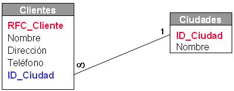
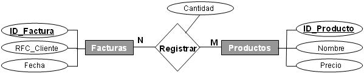
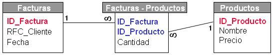

|
Laboratorio 2. ACCESS Relaciones
|

|
|
| . |

Objetivos:
- Crear una base de datos
- Diseñar y personalizar tablas
- Relacionar tablas
|

Instrucciones:
- Realiza la lectura de los
siguientes capítulos del manual de Access.
Capítulo1y2_Tablas.docx
I. Introducción
II. Tablas
|
Relación de tablas
- Abre la base de datos
llamada LaHuerta_matricula y guárdala en tu carpeta dentro de la
unidad d:/ por ejemplo: d:/1202224/LaHuerta_matricula
.
- Relaciona la tabla de
Ciudades con la tabla de Clientes.
- Cada cliente radica en
una ciudad, pero en una ciudad se pueden tener varios clientes.(1-N)
.
- Relaciona las
tablas de Facturas de compra y Productos con la
tabla de Facturas_Productos.
- En una factura de compra
se puede tener el registro de compra de uno o varios productos, y un mismo
producto puede ser comprado en distintas facturas. (N-M)
- Relaciona las
tablas de Notas de venta y Productos con la tabla de
Notas_Productos.
- En una nota de
venta se puede tener el registro de venta de uno o varios
productos, y un mismo producto puede ser vendido en distintas
notas. (N-M)
.
- Relaciona la tabla
de Clientes con la tabla de Notas de venta.
- Un cliente puede tener
varias notas de venta, pero una nota de venta es de un solo cliente. (1-N)
- Relaciona la tabla
de Proveedores con la tabla de Facturas de compra.
- Un proveedor
puede tener varias facturas de compra, pero una factura de compra
es de un solo proveedor. (1-N)
.
- Relaciona la tabla
de Proveedores y Productos con la tabla de
Proveedores_Productos.
- Un proveedor puede surtir
varios productos y un producto puede ser surtido por distintos proveedores.
(N-M)
NOTA:
El siguiente modelo entidad - relación te puede ayudar a entender
mejor las relaciones entre las entidades y así poder relacionar
correctamente las tablas.

Ejemplo de relación de tablas
.
Ejemplo: Relación 1- n
.
- Cada cliente (1) radica en
una ciudad (1)
- En cada ciudad (1) pueden
radicar varios clientes (n)
.
Modelo entidad - relación
1 - n
.

.
Modelo de tablas
relación 1- n

.
|
.
Ejemplo: Relación n - m
.
- En cada factura (1) puedes
registrar varios productos (n)
- Cada producto (1) puede
ser registrado en varias facturas (n)
.
Modelo entidad - relación
n - m

.
Modelo de tablas relación
n - m

.
|
|

Especificaciones
de entrega:
- Nombre
del entregable: LaHuerta_matricula.accdb
- Medio
de entrega: Se entrega en Canvas en la sección de
Laboratorio: Relaciones
Instrucciones para
enviar tus archivos por Canvas:
- Haz
clic en la actividad de Laboratorio: Relaciones
- Haz
clic en el botón de Entregar tarea.
- En el
fólder de Carga del archivo, haz clic en el botón
de Examinar y localiza el archivo *.accdb.
- Cuando
hayas terminado de subir tus archivos, haz clic en el botón de
Entregar tarea y listo!!
|